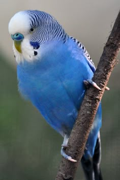
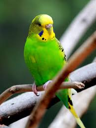
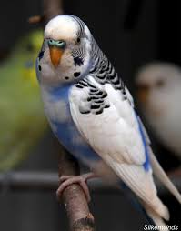
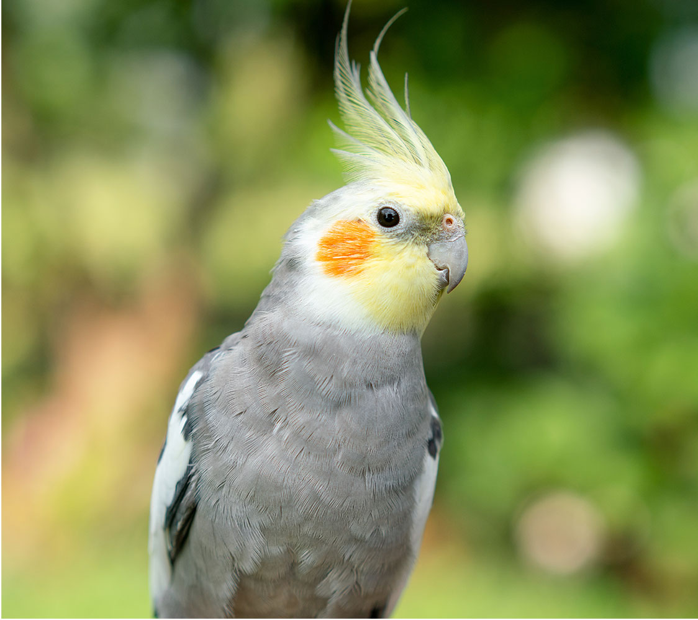
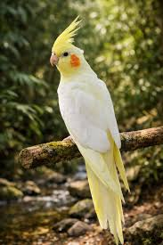
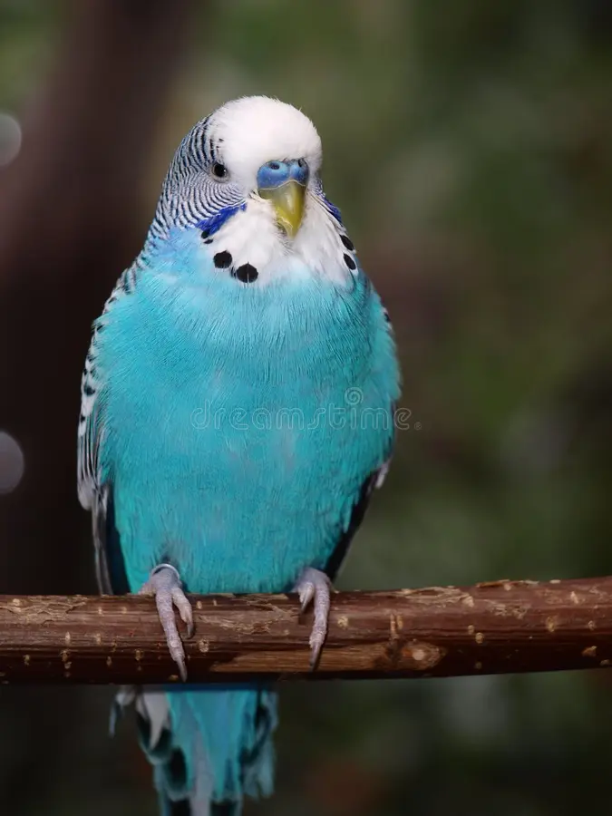

Odin

Meet Odin, he is an Australian parakeet around 4 months old. He is very affectionate and a great companion. He eats everything and enjoys swinging.
This text can be hidden with JavaScript

Meet Odin, he is an Australian parakeet around 4 months old. He is very affectionate and a great companion. He eats everything and enjoys swinging.

This is Mona, a parakeet between 7 and 8 months old. She is not very affectionate but enjoys eating. Even though she is not very cuddly, she is very protective of her loved ones.

Copito is a baby parakeet, only 1 month old and recently gifted to me. She is quite shy and does not like being touched, but she has a very cheerful personality. I really enjoy watching her eat.

Meet Pepe, he is a cockatiel around 10 months old. He is very energetic and fun. He does not eat much, but he is very restless.

This is Marina, a cockatiel I received as a birthday gift. She is very affectionate and loves to eat a lot. She eats so much that she barely leaves food for others.

Meet Rodri, an Australian parakeet who has been with me for over a year. He does not like to play much, he is very serious and prefers being alone, but he is always hungry.